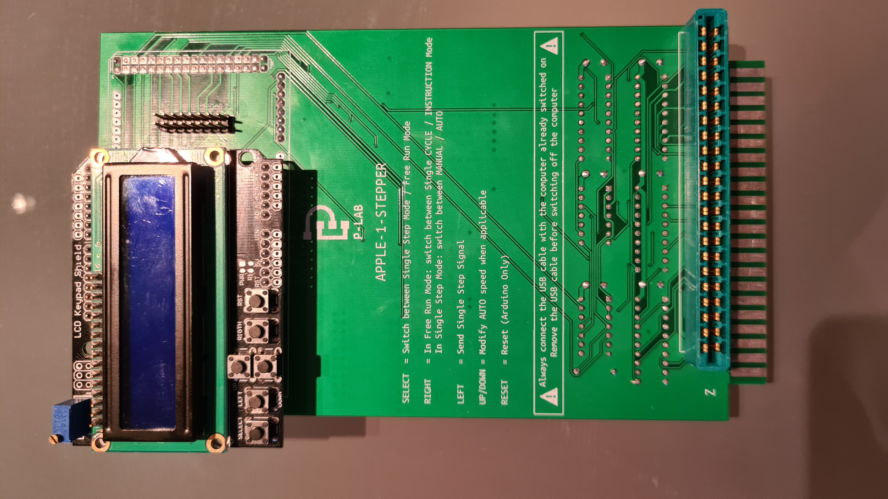
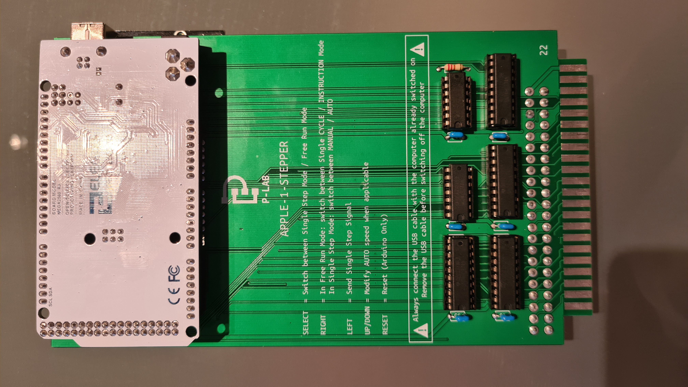
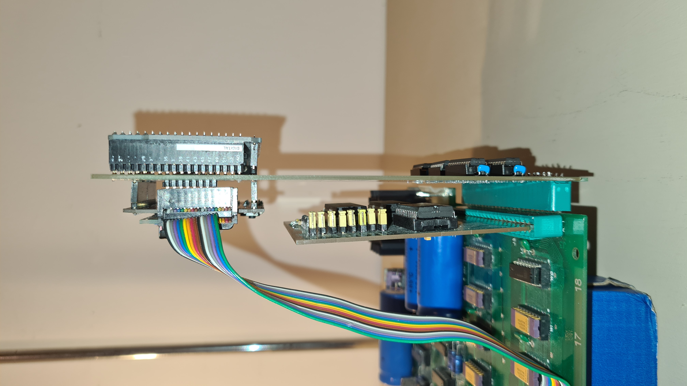

APPLE-1-STEPPER
  Documents hosted here:
PROJECT DESCRIPTION--- Project Description in ITALIAN [pdf]
--- Project Description in ENGLISH [pdf]
--- File sender BASH script [txt]
SCHEMATICS / Initial Release: 1.2
--- Schematics [png]
--- Project [EasyEDA/json]
--- PCB [Gerber/zip]
--- Bill Of Materials [txt]
ARDUINO MEGA 2560 FIRMWARE
--- June 2021 / Initial Release: 1.2
--- Firmware v1.2 NO ARDUINO BOOTLOADER [hex]
--- Firmware v1.2 WITH ARDUINO BOOTLOADER [hex]
--- Firmware v1.2 Source Code [ino/txt]
External links:
Official Video [YouTube]This work is licensed under CC BY 4.0